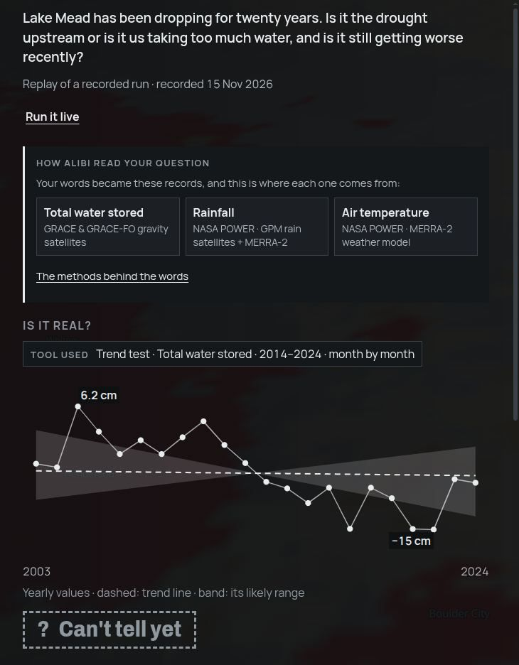
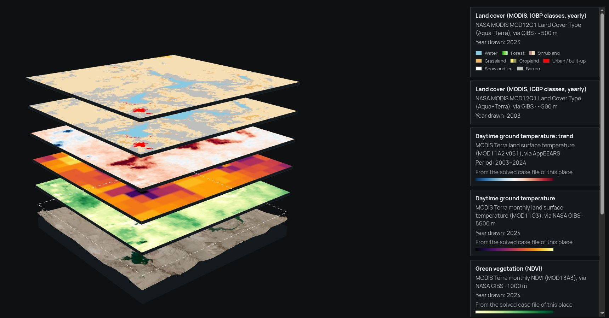
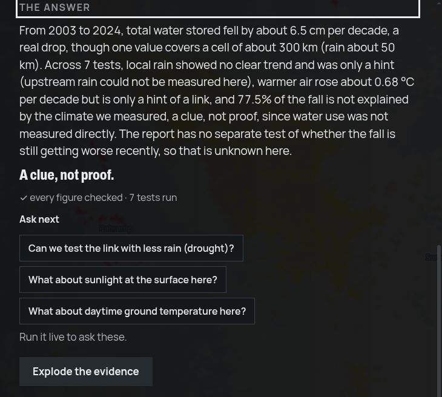
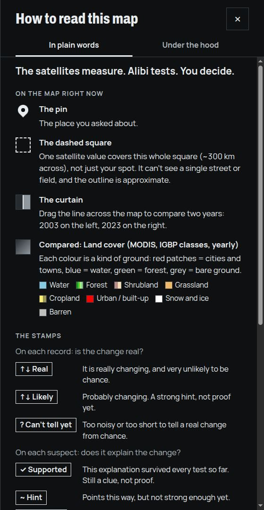
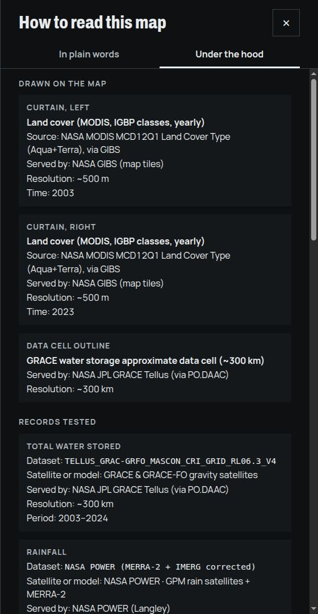

The satellites saw it all.
Nobody told the story.
Ask about a place in your own words. Alibi picks the NASA satellite records, tests what really changed, and answers in plain words: what’s real, and what’s only a clue.
Photo: Aletsch Glacier, 2024, swisstopo SWISSIMAGE (not NASA), as used in the Alibi landing film.
The data is public. The tools are not.
Every term above is something Alibi really runs or reads. You never have to see one unless you ask.
Is the lake near me really going down?
Is it the climate, or is it us?
Can I trust the answer?
NASA has watched every place on Earth for decades. Reading those records still takes tools few people speak.
Ask in your own words. Alibi does the science.

Your words become records, each with its source: water stored from GRACE, rain and air from NASA POWER.

Trend tests run in code, then every record is drawn over the same ground: land cover, ground temperature, vegetation.

A short answer, “a clue, not proof”, every figure checked, and the next questions to ask.
Real screenshots of the live app, 1920 × 1080: /detective?replay=mead, a recorded run of 15 Nov 2026.
Lake Mead: “Is it the drought, or is it us?”
The drop is real (likely range −9.6 to −3.6 cm per decade).
Still getting worse? The last ten years (2014–2024) show no clear trend.
Local rainfall shows no clear trend: only a hint.
Air temperature up about 0.68 °C per decade, but no test links it to the water.
One GRACE value covers a cell about 300 km wide, not just the lake.
Water use is not measured directly, so the answer stays a clue.
Figures from the recorded run backend/data/recordings/mead.json (15 Nov 2026, 7 tests, every figure checked). Chart: yearly series in sites/lake_mead/site.json, whose case file, with upstream rain and snow, gives 54–84% not explained, depending on the climate model.
Honest by design.
Every figure checked
The language model plans and writes; code computes. A checker compares every number in the answer with the data. If it fails, a fixed template replaces the text.
“Can’t tell yet” when it can’t
Each record gets a verdict in words and icons, never colour alone, corrected for testing many records at once.
A clue, not proof
The share the climate doesn’t explain is a clue. Alibi never writes “cause” or “proof”, and says what it could not measure.
Sources named, NASA or not
Each layer says where it comes from and how coarse it is. Non-NASA data says so on screen: NOAA Coral Reef Watch via ERDDAP, AWS Terrain Tiles relief, swisstopo, IGN, USGS photos.


NASA-level tools.
Everyday words.
Decades of satellite records are open to everyone, yet read by a few. Alibi turns reading them into a conversation, and keeps the doubt in the answer.
Students
A curious 16-year-old asks about the lake, glacier or coast they care about, and watches how a scientist would check it, step by step.
Journalists
A figure with its range, its source and its caveat, worded so it can be quoted without overclaiming.
Anyone curious
In the browser, no jargon needed. Plain words first; the datasets and methods are one tap away.
Background: Doñana wetlands, 2022, IGN Spain PNOA aerial photo (not NASA), as used in the Alibi landing film.
Works today. Four cases solved, any place to ask.
Lake Mead, USA
Total water stored down 6.5 cm per decade, real. 54–84% not explained by climate, depending on the climate model.
Aletsch Glacier, Switzerland
Air temperature up 1.0 °C per decade, water stored down 6.9 cm per decade, both real. No climate split, on purpose: it would mislead here.
Doñana wetlands, Spain
Water stored likely down 8.6 cm per decade; topsoil moisture down, real.
Great Barrier Reef, Australia
Sea surface temperature up 0.23 °C per decade, real. Reef-years with heat stress ≥ 4 °C-weeks: 1 in 2003–2013, 20 in 2014–2024.
All 2003–2024, from sites/<id>/site.json. Reef heat stress: NOAA Coral Reef Watch (not NASA); it measures heat, not coral death.
- The detective, live: click any point, ask; it plans checks from a fixed menu and code runs them on GRACE, NASA POWER, GLDAS and MODIS.
- Replays of recorded runs, the evidence stack, the map guide, the checker on every figure.
- Turn any point into a solved case, with relief and yearly maps, on demand.
- Per-pixel trend maps for vegetation and water.
- More ocean and air records.
- A Spanish interface.
Team 43Segfault · Mandy · Ale · NASA Space Apps Challenge 2026, Málaga. NASA data: GRACE/GRACE-FO, NASA POWER, GLDAS, MODIS, NASADEM, HLS, JPL MUR SST. No NASA logo is used.